Radio & antennas
RF generator 25 MHz - 4000 MHz
Simple sweep RF generator, harmonic comb generator. Arduino RF beacon.
Page index
Premise
June 2014
This circuit is an RF harmonic generator, starting from a fixed and stable signal generated by a 5V 4-pin half-size quartz oscillator, compact and stable of the type used for microprocessor clocks.
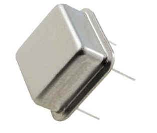
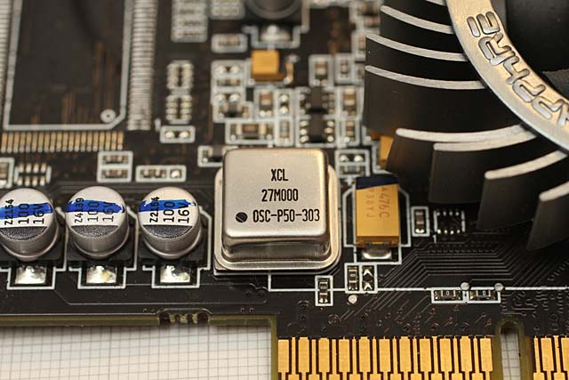
It is possible to disassemble quartz oscillators from almost all motherboards or recent microprocessor circuits. From catalogs it is possible to order oscillators for frequencies ranging from 1 MHz to over 100 MHz.
The harmonics repeat starting from the fundamental frequency of the crystal up to exceeding 4000 MHz, in practice it's like having a sweep generator, useful for testing many devices.
At the output suitable for a 50 Ohm load there is a maximum signal of 16dB, it is of considerable intensity, suitable both for building small transmitters and for testing filters.
It is possible to narrow the bandwidth by making downstream one or more tuned stages, all while obtaining great frequency stability, thanks to the quartz.
If you want a tighter repetition you can use a crystal also from just 1 MHz, so as to have a narrow pulse every MHz up to over 2000 MHz still with a fair signal. Ideal for testing USB SDR receivers like the FUN-CUBE or similar ones....
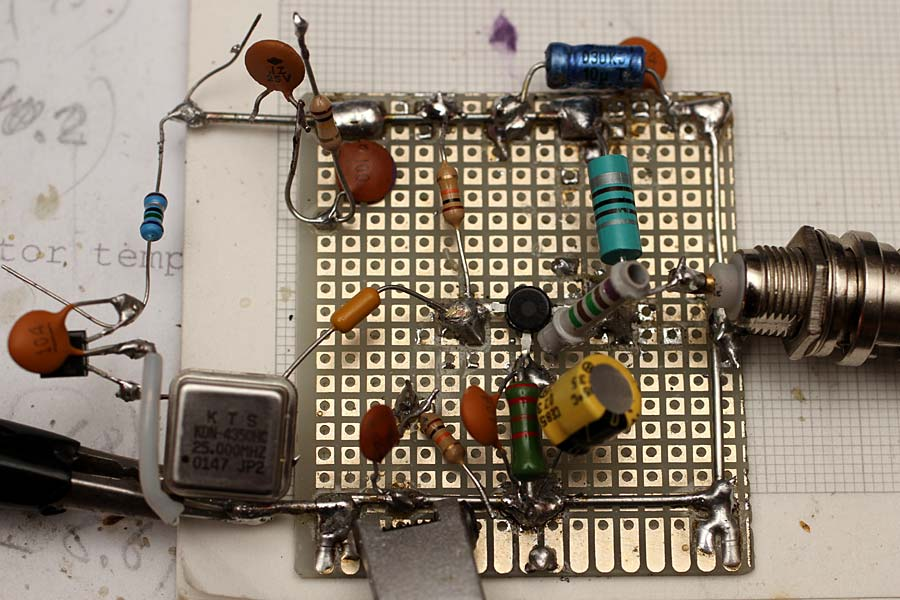
This is the prototype board of the RF generator; the components and diagram are optimized to have maximum output power with a single RF transistor type BFR91, some resistors and capacitors are not connected, they were used for testing. It is possible to use most quartz oscillators type KTS and other brands with frequencies from 1 to 120 MHz. The output signal is over one Volt and therefore suitable to drive the transistor directly.
Circuit diagram
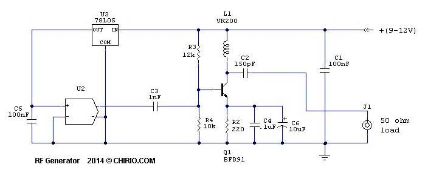
- The crystal oscillator U2 must be powered at 5V through the regulator U3 78L05.
- Capacitor C3 applies the signal at 25.00 MHz to the base of the RF amplifier transistor d 6 GHz, also used as Tunnel diode see TUNNEL EFFECT
- Resistor R2 limits the current of Q1 to a maximum of 40mA with 12V power supply, during testing I recommend not exceeding 9V otherwise you risk burning the transistor.
- Capacitors C4 and C6 are essential to achieve almost 50mW output (9V), without capacitors the output power at 50 Ohm drops to 1-2mW
- For the L1 choke inductor you can use a VK200, but also 20 turns wound on a 5-6mm ferrite work fine. In the final version a 1mH inductor was adopted to have more amplitude in the HF band.
- Instead of L1 a tuned LC can be inserted, in this case we will have a larger signal peak at the resonance frequency.
- Everything must be placed in a metal container to avoid direct radiation, which can interfere with radio transmissions.
- The output signal if applied to a Discone type antenna is sufficient to be heard a few km away even without further amplification.
- Using a 2N2222A type transistor similar results are obtained, but the bandwidth is limited to 500 MHz
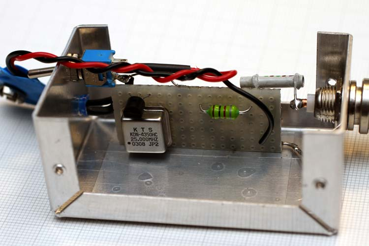
This is the trial version inside the metal container, still with 25 MHz oscillator, inductor L1 has become 1mH.
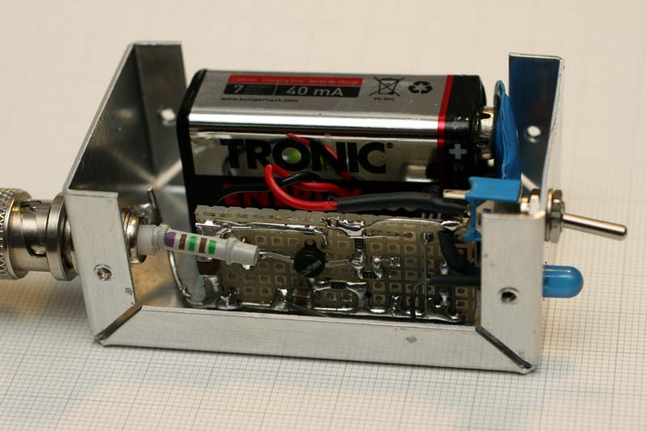
Where possible, all components are SMD, C4 and C6 have become a single 20uF ceramic capacitor, as well as C1. Complete the group, the toggle switch and the LED to signal power on.
To achieve the lowest RF leakage, the cover must be closed and firmly fastened with screws...
Output signal
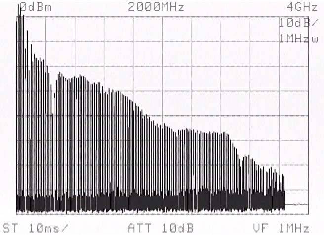
This is the broadband signal present at the output, we still get -60dB at 3500 MHz equal to 0.224mVrms. The first impulses together with the fundamental exceed the 0dB line.
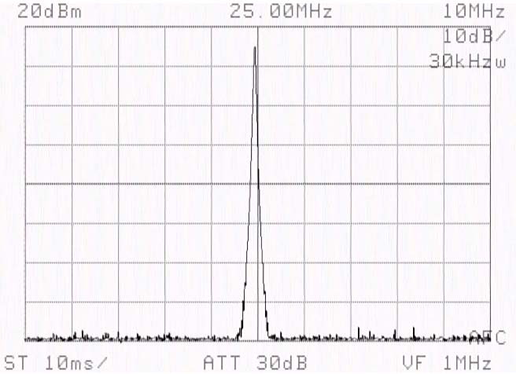
This is the fundamental signal at 25,000 MHz with +16dB equal to 2.69V on 50 Ohm. On each band the signal is very stable and clean.
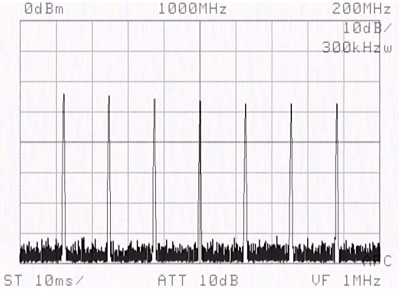
Here you can see very well, the repetition of harmonics one every 25 MHz, the amplitude is not always constant and linear is the mathematics of even and odd harmonics, it's always a simple circuit to build, you can't expect measurement instrument performance...
{kind=link}
Power Meter reading of output power, 16.94dB, referenced to the highest peak; not bad for a single transistor connected to a crystal oscillator. The RF generator is connected directly to the analyzer input to avoid cable losses. (click to enlarge)
Arduino RF generator
Instead of a crystal or crystal oscillator, it's possible to use an Arduino board to generate the frequency; in this test an Arduino Pro Nano 5V with 16 MHz clock was used. The 9V power is drawn from the breadboard, but separate 5V USB power can also be used just for Arduino. RF output on pin out (8). The output is applied to the circuit described above, and Arduino acts as the crystal oscillator.
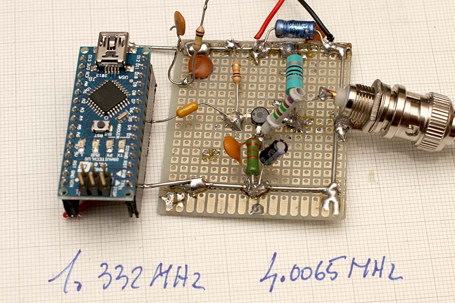
- To have a fundamental at 1,332 MHz (pin out 8) the program indicated on this page is used as a starting point: http://forum.arduino.cc/index.php/topic,8456.0.html
The program in addition to running the loop for maximum output frequency uses interrupts to modulate the output with a Morse message, you can easily change the message with a more appropriate text. The harmonic signal at the output is present up to beyond 2000 MHz with a repetition of 1.332 MHz.
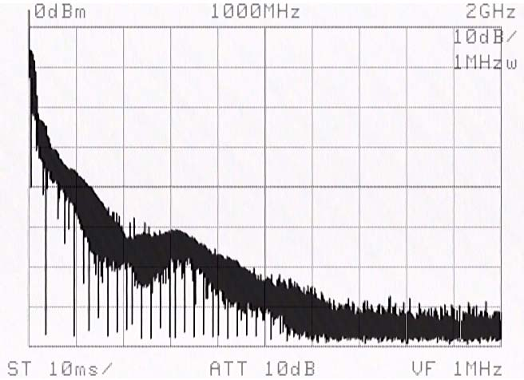
This is the output signal on 50 Ohm, at 1000 MHz we are at -60dB still audible on a scanner at a few meters distance. Given the type of modulation it is listenable in both FM and AM, even better in the HF band with CW filtering.
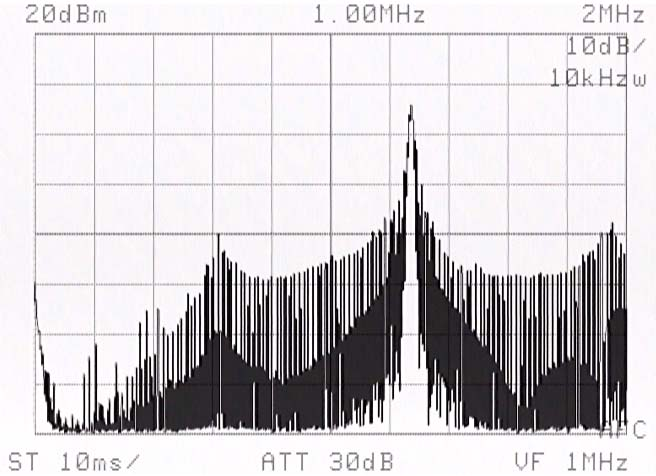
This is the fundamental at 1.332 MHz very disturbed around, due to Morse modulation and other disturbances generated internally by the Arduino board.
- The maximum output frequency with a fundamental at 4.0065 MHz (pinout 8) uses this more simplified and faster program that brings to all outputs the same signal which corresponds to 1/4 of the 16 MHz clock frequency.
http://forum.arduino.cc/index.php/topic,36729.0.html
Much simpler program than the previous one, it serves to reach the maximum available frequency on the output ports.
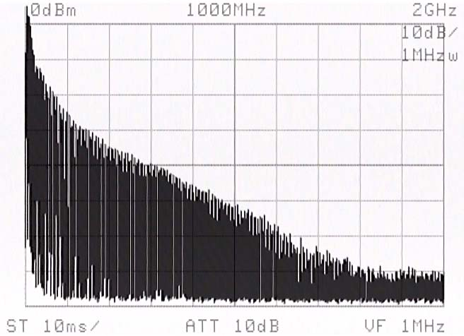
This is the output signal on 50 Ohm, at 1000 MHz we are at -50dB signal better cleaner than the previous program.
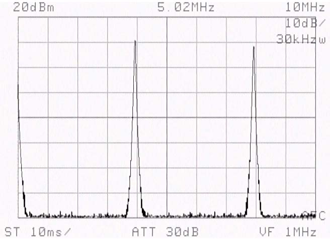
This is the fundamental signal, measured at 4.0065 MHz very clean, and without modulation noise like on the previous program, the peaks follow regularly every 4 MHz up to over 2000 MHz.
Using Arduino 2 which runs with a higher clock it is conceivable to obtain a greater number of fundamentals in programming.....
...................
Applications
The RF generator is useful in many cases, you can test the input of a receiver to verify operation, and with the crystal oscillator you can check the accuracy of the reading on the radio scale for most bands exceeding 3000 MHz.
Using a 1 MHz crystal oscillator becomes ideal for testing SDR receivers.
To linearize the signal you can use a high-pass filter tuned to 700-1000 MHz followed by an attenuator, so as to reduce the lower frequencies, and have a signal of about -30 dB.
By greatly attenuating the signal and connecting the signal directly with cable it is possible to verify the input sensitivity for radio receivers.
© Roberto Chirio: all rights reserved.